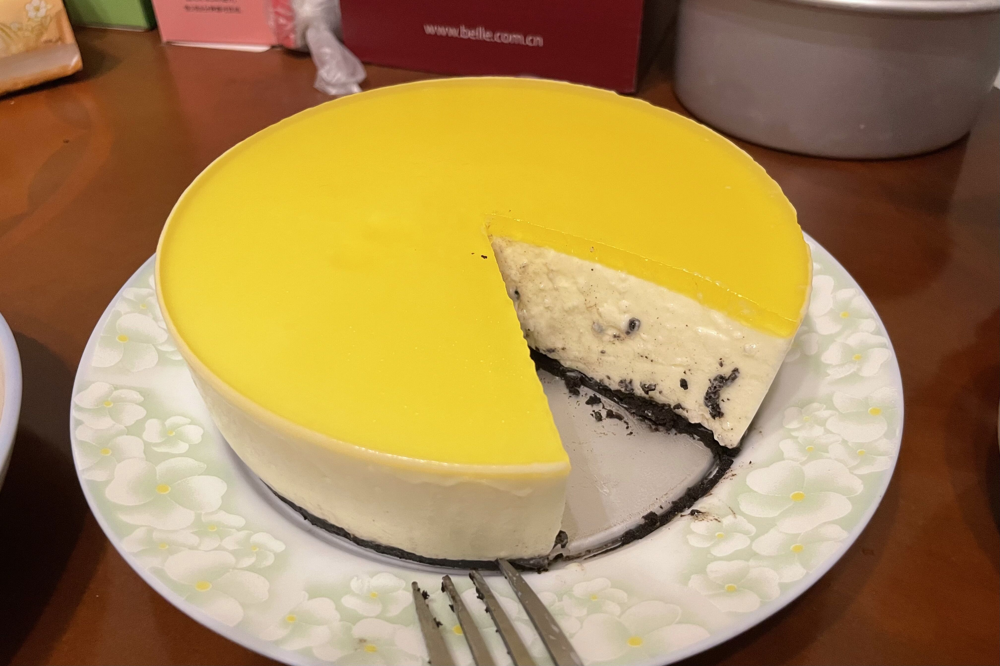

Mousse
芒果慕斯

模具规格统一为6寸
Material
- 40~80g饼干
- 与饼干比例为2:1的黄油
- 250g左右的芒果肉
- 15g吉利丁
- 250g淡奶油
- 30g糖（个人口味）
Notes
- 为了方便脱模，在模具底部铺上圆形油纸。
- 吉利丁低温会很快凝固，所以混合吉利丁时芒果泥要保持温温的。
- 奶油层倒入模具时都要过筛。
- 中间层冷藏20分钟以上再做镜面。
- 脱模时找一个杯子把蛋糕放在上面，用吹风机热风脱模，或者热毛巾敷也行。
Steps
- 饼干碾碎成细腻的粉末状，与提前软化好的黄油混合，搅拌均匀，倒入模具底部。
- 用擀面杖或者勺子背面对饼干底进行铺平和压实，放入冰箱冷藏。
- 将芒果肉倒入榨汁机搅打成泥。
- 吉利丁用冷水泡软后捞出，用不超过80度的温度隔水加热吉利丁（我用的是微波炉）。
- 将完全液体化的吉利丁倒入芒果泥中，均匀地混合，放置一旁备用。
- 准备刚冷藏好的淡奶油加入糖，用电动打蛋器打至六分发（奶油呈冰淇淋状，没有很好的流动性，提起打蛋器不会滴落）。
- 芒果泥混合淡奶油搅拌均匀，倒入1/2的量模具中。晃动模具至奶油均匀地铺满模具。
- 放入准备好的芒果丁，再将剩下的芒果泥统统倒入模具里。晃平整后“震”两下让表面光滑。
- 放入冰箱冷藏至奶油层凝固成果冻状，开始做镜面层。
- 取50克芒果泥混150克水和5克融化的吉利丁混合，同步骤7和步骤8那样，铺满奶油层顶部。
- 放入冰箱冷藏大约4个小时即可食用。
酸奶慕斯
Chat & Chat
酸奶慕斯的做法和芒果慕斯大同小异，仅仅只是将芒果层换成酸奶。 我自己制作的时候将消化饼干换成了奥利奥，镜面图省事也用现成的果汁来做。如右给出酸奶层的用料。

Part of Materials
| Name | Dosage |
|---|---|
| 淡奶油 | 160g |
| 糖 | 43g |
| 光明酸奶 | 400g |
| 吉利丁（不包括镜面） | 8g |